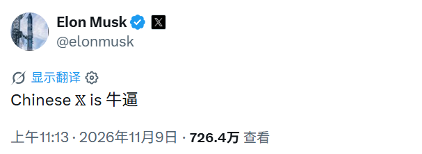

社区声浪
只有经录音者确认并上传的录音会出现在这里。每段最长 5 秒，播放随机挑选社区录音。
正在读取社区录音…不是合成音效——这里播放社区用户自愿录制的声音。
需先配置存储服务。浏览器仅在你点击后申请麦克风。只有经录音者确认并上传的录音会出现在这里。每段最长 5 秒，播放随机挑选社区录音。
正在读取社区录音…录音将上传至项目的公开声音库，任何访客都可能听到。请只录自己的声音，不要录入他人、未成年人或私人信息。上传前你可以试听并确认。
录音可联系网站维护者请求删除。不要上传违法、冒用或未经授权的声音。
社区将这则 X 帖子中的 “Chinese X is 牛逼” 作为灵感起点。非官方梗文化致意，不代表 Elon Musk 或 X 背书。
